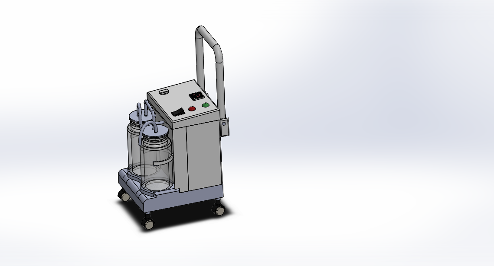
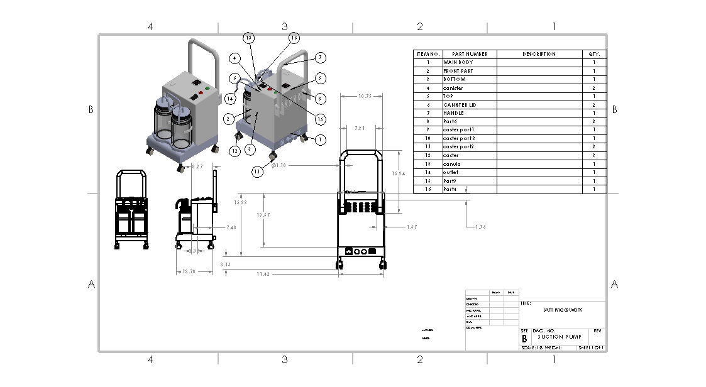
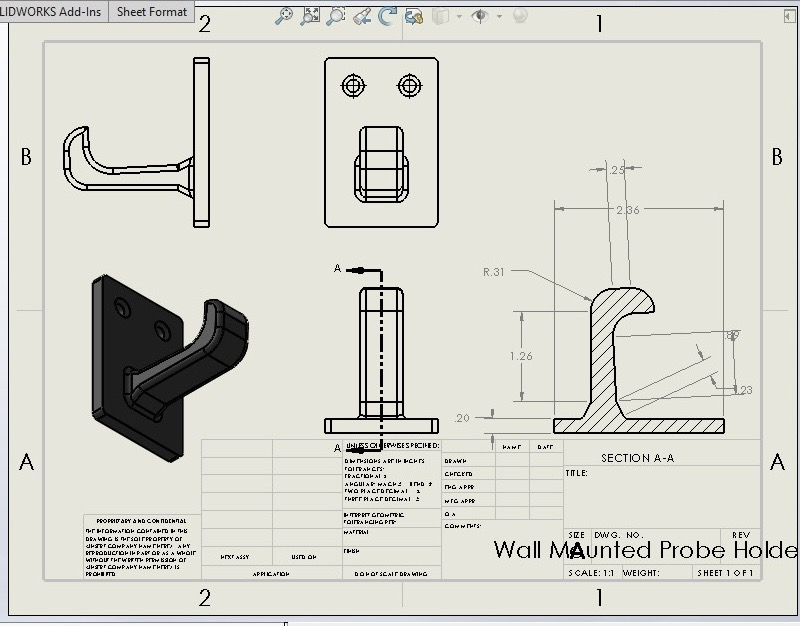
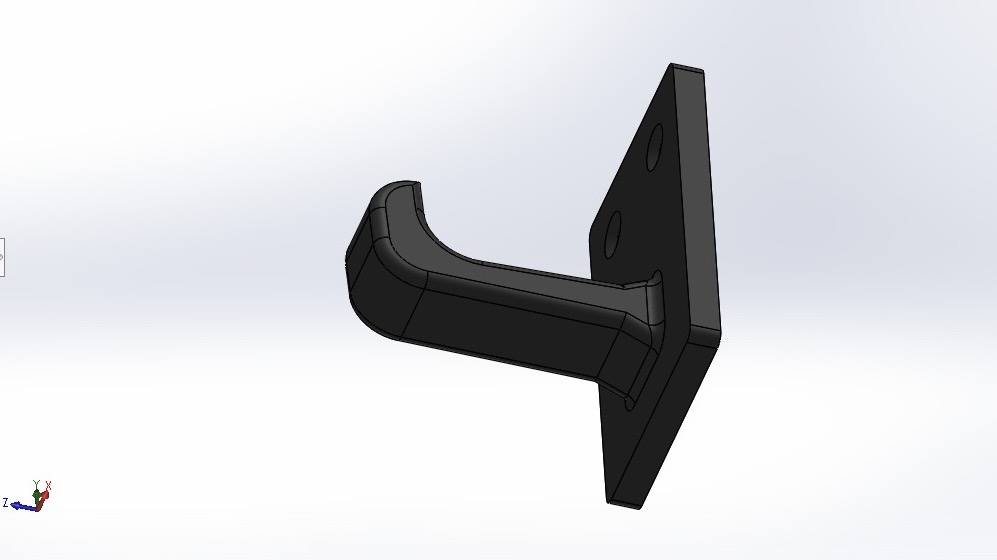
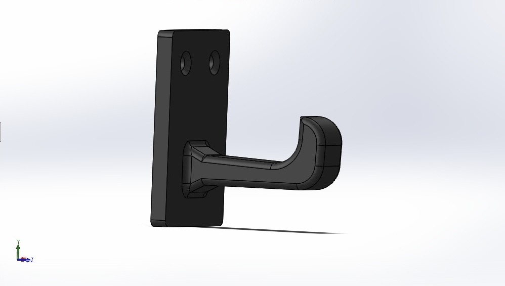
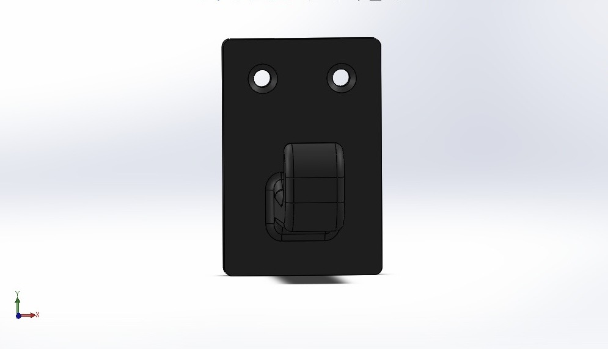
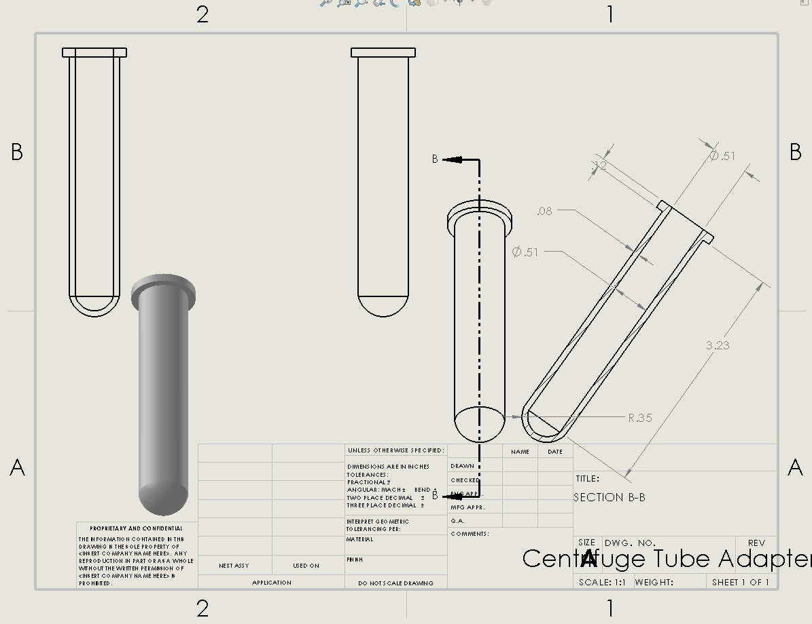
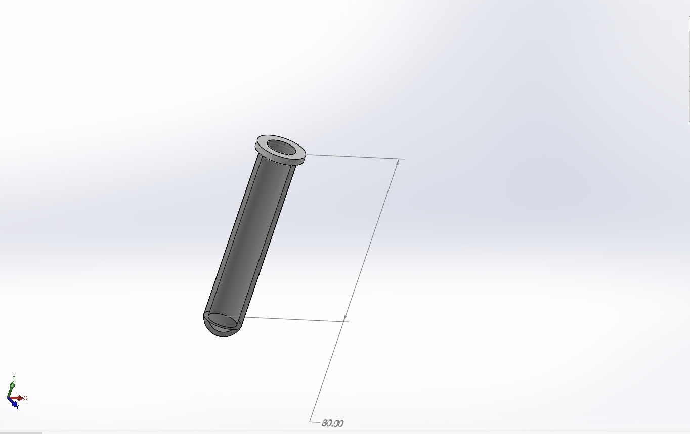
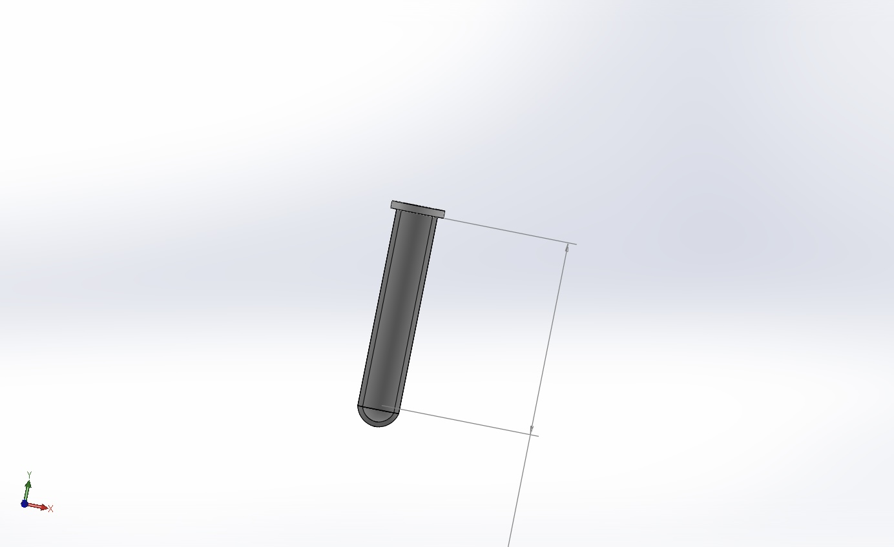

Biomedical CAD Gallery
Detailed SolidWorks assemblies and technical documentation.
Assembly Design
Mobile Medical Suction Machine
SolidWorksProject Overview
Fully modeled mobile medical suction unit replicating a clinically functional hospital device.
- Dual 2–3L collection jars with overflow protection.
- Oil-less diaphragm vacuum pump enclosure.
- Reinforced base with locking caster wheels.
- Functional control panel with indicator system.


Utility Engineering
Wall-Mounted Probe Holder
PETG / Additive MfgEngineering Details
Designed to protect laboratory probe cables through optimized additive manufacturing geometry.
- 5mm fillets at base junctions to reduce stress.
- Countersunk holes for flush, safe mounting.
- 1mm rounded edges to prevent cable snagging.
- High load-bearing hook thickness.




Precision Component
Centrifuge Tube Adapter
Fit & ToleranceTechnical Process
Custom adapter designed to stabilize 5mL test tubes within standard large-scale centrifuge buckets.
- Calculated precise clearance fit for zero-wobble.
- 22mm top lip serves as a mechanical stop.
- 8.5mm fillets for high-speed balance.
- Optimized for low-cost 3D printing production.


